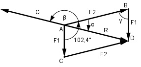

Aufgabe 218 Welche Größe G und Richtung β zu F2 hat die Kraft, die den Kräften F1 = 48,5 N und F2 = 57,2 N, die in einem Punkt unter einem Winkel von 102,4° angreifen, das Gleichgewicht hält?

Im Dreieck ADB: γ = 180° - 102,4° = 77,6° Fall SWS: Cosinussatz: R2 = F12 + F22 - 2 * F1 * F2 * cos γ = R2 = (48,5 N)2 + (57,2 N)2 - - 2 * 48,5 N * 57,2 N * cos 77,6° R2 = (48,5 N)2 + (57,2 N)2 - - 2 * 48,5 N * 57,2 N * 0,2147 R2 = 4 432,8 N2 |√ R = 66,6 N = G Fall SSW: Sinussatz: F1 R ------- = ------- |*sin α sin α sin γ R * sin α F1 = ------------- |*sin γ sin γ F1 * sin γ = R * sin α |:R F1 * sin γ 48,5 N * sin 77,6° sin α = ------------ = --------------------- = R 66,6 N 48,5 N * 0,9767 = ------------------ = 0,7113 --> α = 45,3° 66,6 N β = 180° - α = 180° - 45,3° = 134,7°